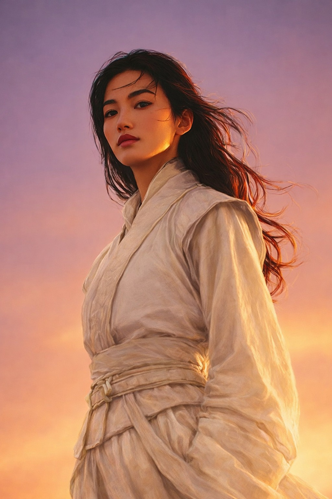

Nascida em Qishan no reino de Yun Meng, em Haishi, foi batizada de Li Qin por seus pais. Seu pai, Li Ni, era ministro dos ritos e conselheiro do Imperador, já sua mãe, Cui Ying, era capitã do exército e filha do general Cui Yi.
Descendia de uma família separada em três clãs, (Os Li; Cui e Shen), protetores do Senhor dos Destinos. Os Três Grandes Clãs eram como galhos formando uma só árvore. A Linhagem Perdida do Príncipe Iluminado.
Li Ni e Cui Ying eram apaixonados desde novos e pediram à divindade dos destinos que unisse seus caminhos para que eles pudessem ficar juntos. Assim foi feito. Viveram anos tranquilos e felizes, até que, quando Li Qin tinha oito anos, assassinos invadiram a mansão de sua família e matou todos, mesmo os servos e os animais não foram poupados.
Sua mãe a protegeu, fugindo pelos fundos em uma parte quebrada do muro, entregando a própria espada e o medalhão de Li Ni, enquanto ela própria servia de obstáculo para que a filha fugisse, pediu que a menina encontrasse o Templo Escondido nas montanhas.
A pequena Li Qin andou, se esgueirando em meio aos bosques e florestas, seguindo seu coração, encontrou o Templo, onde Cui Yi e Li Jinbao (avô materno e avô paterno, respectivamente) eram monges no templo. Abrigaram e cuidaram dela. Os dois desconfiavam de uma conspiração e deram a ela um novo nome para esconder sua identidade. Da dor e da morte, enterrou Li Qin junto com os pais, renascendo como a guerreira Shen Yue.
Por dois anos, ela continuou seu treinamento, com uma rotina rigorosa, aprendeu a ser disciplinada e centrada, além de resistente, física, mental e espiritual. Quando aos dez anos, enfrentou o desastre novamente: inimigos invadiram o Templo, seus mentores a impediram de lutar, mandando-a fugir, dando a espada que pertencia ao clã de sua mãe e o cordão com um pingente que representava Adongolarof que pertencia ao clã de seu pai. Yue obedeceu, correndo para longe, contudo estava perto o bastante para ver uma explosão destruir o Templo. Ela andou, desnorteada, por um tempo, até que foi sequestrada por vendedores de escravos, que atravessaram com ela para o outro lado do mundo.
Enquanto atravessavam uma floresta, Yue viu a oportunidade perfeita de fuga, um descuido de seus algozes, ela foge levando consigo a espada de sua mãe. Contudo o local era desconhecido, se perdeu na floresta. Até seu corpo ceder.
Quando acordou, estava na cidade de Sean Bayle. Um elfo chamado Virion a encontrou e a levou para ser tratada. Yue era muito fechada e não compartilhou detalhes de sua vida, e o senhor da cidade a tolerava por causa da esposa e de sua filha, Reannon, que insistiram para deixar ela ficar. Yue e Reannon se tornaram inseparáveis. Uma confiança inquebrável. Yue acompanhou de perto as intrigas familiares e segredos de Reannon, tornando a ligação entre as duas ainda mais forte. Mesmo quando seguiram por caminhos opostos e passaram alguns anos separadas. Nesse período se aproximou de Bran - no qual não gostava muito no início -, porém, o amor de ambos por Reannon estreitou o laço de amizade deles.
Anos depois, descobriu que o responsável por trás dos atentados que a fez perder a familia era um homem conhecido no submundo como Rei Dragão. Contudo, suas investigações não a levaram mais perto de sua vingança. Frustrada, ficou um tempo em uma vila, refletindo seu próximo passo. Por conveniência do destino, seu caminho se cruzou com de Reannon e Virion novamente, seguindo com eles para a cidade portuária de Warback.